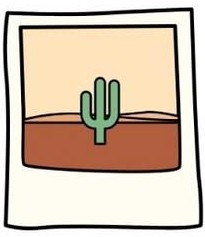
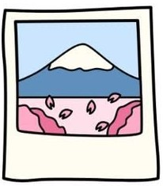
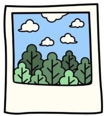

AI&TECH
CREATION BRIDGE
Playbooks, Free Resources & Guides
รวมเครื่องมือ / ระบบ AI

เอกสาร · ความรู้

งานออกแบบ

รวมเครื่องมือ / ระบบ AI
เอกสาร · ความรู้
งานออกแบบ
×
%20(1).png?updatedAt=1773177420277)